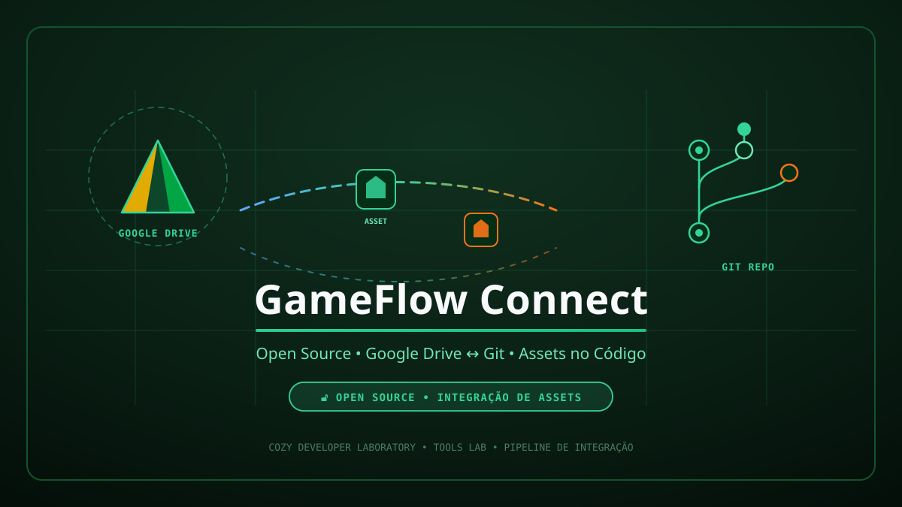
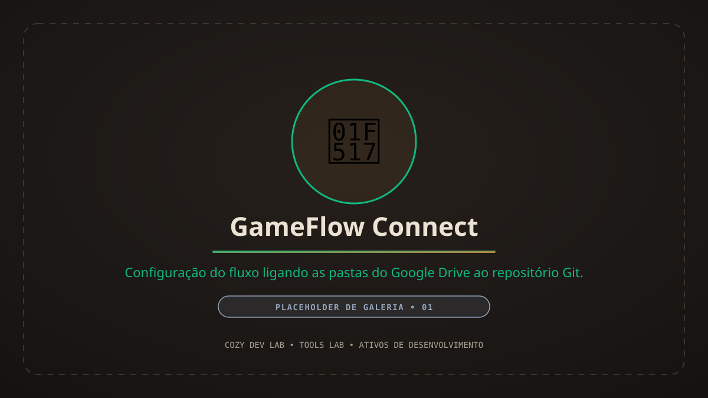

GameFlow Connect
Base de integração open source entre Google Drive, versionamento Git e o código do seu jogo.

💡 O Desafio & Contexto
Gargalo Operacional
Abordagem Técnica & Solução
⏱️ Contexto de Workflow & Produtividade
Público-Alvo
✨ Recursos Principais
🔄 Fluxo do Pipeline (I/O)
Entradas (Inputs)
Lógica de Processamento
Saídas (Outputs)
🖼️ Galeria do Projeto
Registros visuais, interfaces e capturas de desenvolvimento.
🔧 Arquitetura Técnica & Ergonomia
Estruturas de Dados
Integrações com Engine / Editor
Decisões Técnicas
🛡️ Validação, Testes & Tratamento de Erros
Validação & Não-Destrutividade
📊 Resultados & Limitações Observadas
Limitações Conhecidas
Próximos Passos